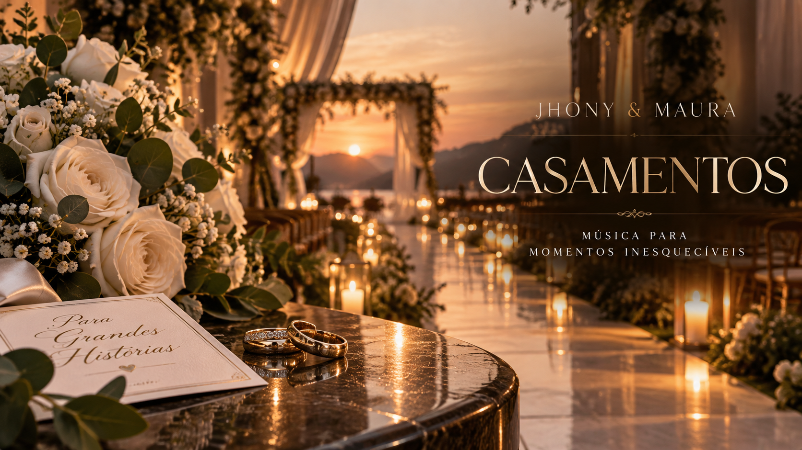

CASAMENTOS
Música para celebrar
Música para celebrar
o amor.
Uma experiência musical pensada para acompanhar cada momento do casamento — da elegância dos primeiros instantes à energia da pista.
A EXPERIÊNCIA
Música, presença
Música, presença
e emoção.
Jhony & Maura fazem parte da celebração, acompanhando a atmosfera da festa e criando momentos que ficam na memória.
Uma experiência pensada para fazer parte de um dos dias mais importantes da sua história.
Consultar disponibilidade →